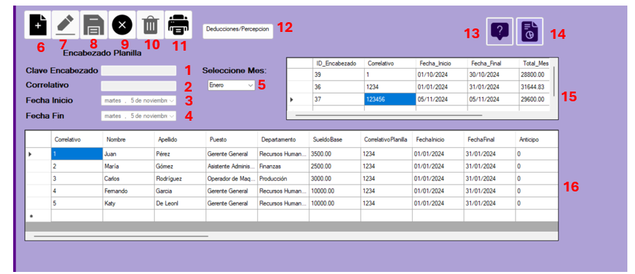

El formulario de Generación de Planilla es un formulario diseñado con la finalidad de crear planillas dinamicas que sirvan de referencia
a la hora de gestionar percepciones, deducciones de la mejor manera posible, asi como con funcionalidad de impresión, generacion de reportes y de ayuda

- Clave de encabezado: su finalidad es servir para ver lo relacionado con la clave, sirve más adelante para editar o eliminar.
- Correlativo: es sobre el cual se genera la planilla como tal, sirve para identificar sobre el correlativo que está el empleado.
- Fecha de Inicio: como tal, es la fecha que se debe ingresar de inicio de la planilla.
- Fecha de Fin: es la fecha en la que termina la planilla.
- Mes: se debe seleccionar un mes en el Combobox para verificar la planilla por mes.
- Ingresar: es para habilitar los campos de texto sobre los que se ingresarán datos.
- Editar: la función permite, luego de haber seleccionado un registro, editarlo.
- Guardar: guarda los registros de lo ingresado o se actualiza.
- Cancelar: cancela la operación en curso.
- Eliminar: luego de haber seleccionado un registro, permite eliminarlo.
- Imprimir: permite imprimir la planilla del mes seleccionado.
- Deducciones/Percepciones: permite ingresar al formulario de vinculación.
- Botón de ayuda: despliega este menú de ayuda.
- Botón de reportes: muestra un reporte detallado de la planilla.
- Información del encabezado: muestra los datos del encabezado de la planilla.
- Planilla completa: muestra la planilla completa.